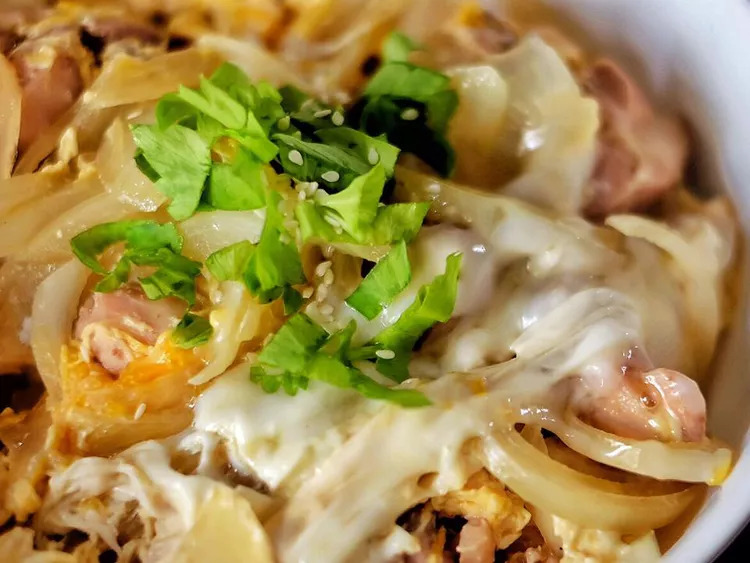

Miso Soup

Description
This miso soup is full of savory flavors. Add more dashi to your soup if you want a stronger stock. You can use yellow, white, or red miso paste for this soup — yellow miso is sweet and creamy, red miso is stronger and saltier.
Ingredients
These are the basic, easy-to-find ingredients you'll need to make this top-rated miso soup recipe:
- Water: This easy miso soup recipe starts with four cups of water.
- Dashi granules and miso paste: Dashi granules and miso paste give the soup a bold, savory flavor base.
- Tofu: The protein in this miso soup is a package of diced silken tofu.
- Green onions: Diced green onions add a burst of color and flavor.
Steps
- Bring the water and dashi granules to a boil.
- Reduce the heat and whisk in miso paste.
- Stir in the tofu and green onions.
- Simmer and serve.